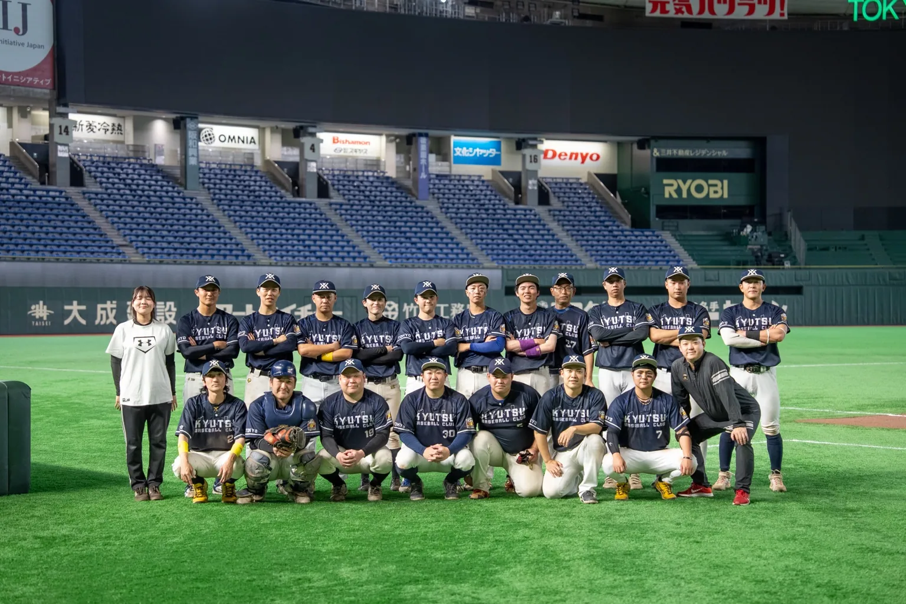
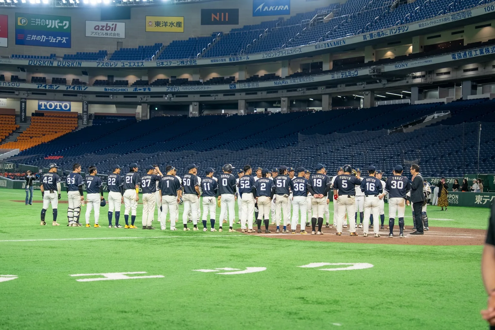

KYUTSU BASEBALL CLUB / TOKYO
TOKYO — EST. 2016
KYUTSU
BASEBALL CLUB野球を通じて、つながる。
OUR PURPOSE
GROW
THROUGH
BASEBALL.
人間力育成。
野球も、ビジネスも、一流へ。
球通は、ただ草野球をするためのチームではありません。本気で勝ちを目指す過程で、準備・責任感・主体性・判断力・仲間との向き合い方を磨き、野球の外でも成長できる組織を目指しています。
球通のPURPOSEを見る →01 / COMPETE本気で勝ちを
目指す。
目指す。
02 / THINK自分で考え、
判断する。
判断する。
03 / CONNECT仲間と向き合い、
高め合う。
高め合う。
04 / GROW野球の外にも
成長を持ち帰る。
成長を持ち帰る。

KYUTSU BASEBALL CLUB / TOKYO
ONE TEAM. ONE STANDARD.UPDATES / KYUTSU
NEWS.
NEWSを準備中です。
LOADING RESULTS...
FROM KYUTSU / NOTE
LATEST
STORIES.
SCENES FROM KYUTSU